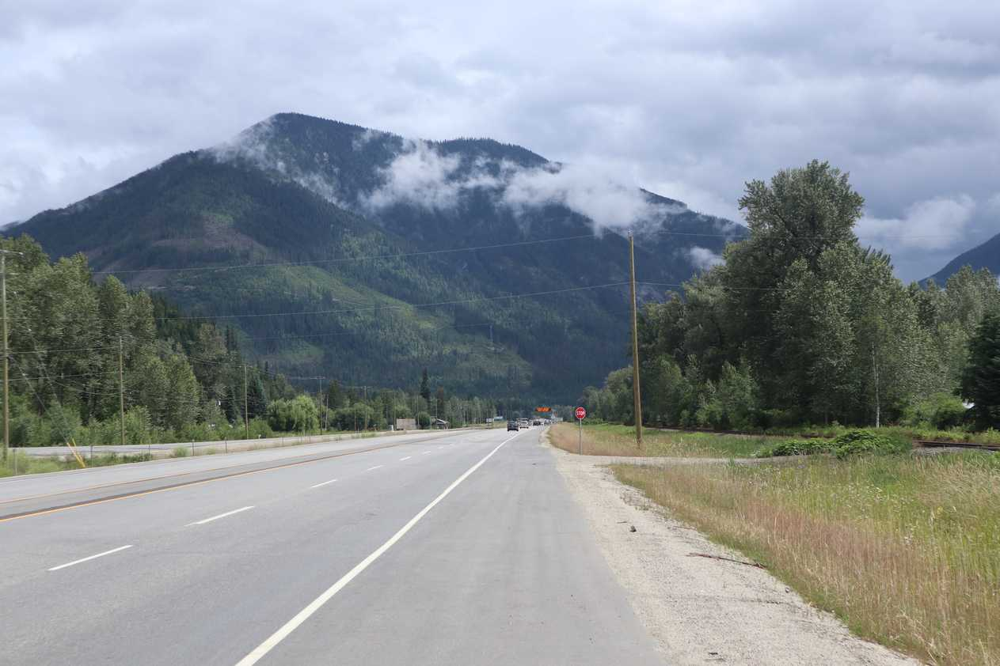

Today I woke up late and was ready to go by 900. I slept in because I was a little tired and didn't wanted to get out in the morning rain. The road was nice.

The mountains are getting bigger and bigger.When I was child I did a cross-Canada road trip. I was excited to notice the red roofed the building I remembered from before.
Before reaching Revelstoke, I was hit with heavy rain that made my bike real dirty and me soaking wet.
a
Revelstoke bear.
Revelstoke was pretty and filled with tourists. I got there through heavy rain and stayed at McDonalds to warm up. Leaving Revelstoke I was soon hit with more intense rain - my wool socks ran out of battery and weren't keeping me warm anymore.
Looking back after the rain ended.
Some RV driver gently honked at me as a sign of encouragement and it made my day! I enjoy when people honk, but sometimes drivers honk real loud behind you which can scare you and make you angry. By the time I reached Canyon Hot Springs I was soaking wet and looking forward to taking a break.
A beautiful rainbow right before Canyon Hot Springs. A good reminder to not let the rain bug your spirits.
The place was nice but a little pricey. I spent some time in the hot pool and the rest of the evening working on my bike. The rain and dirt throughout the day made my back breaks not work. The fix involved cleaning and oiling it up. I washed my dirty clothes in the washing machine - 4 bucks a load is pricey - Hostels are more affordable. I remember hearing somewhere that your basic travel distance is limited by your underwear count - so plan ahead. I think four/five on a bike trip is a good count.